|
This document gives a brief tour of using the Gmaj alignment viewer to examine gene conversion results from CHAP, the Cluster History Analysis Package, which is described in Song et al. (2011) and is freely available from the Miller Lab at Penn State.
Gmaj is a general-purpose viewer for multiple-sequence alignments in MAF format, but it has recently been extended with special features to support analysis of gene conversions. The new version included with CHAP is still in a beta stage, so please report any bugs you encounter. It has other enhancements as well, such as many more preference settings and the ability to save them for reuse, but those are beyond the scope of this tour. Gmaj is written in Java, so you will need to have Java available on your computer to run it. For basic information about using Gmaj, see the documentation for its current main release, which is rather old but still mostly applicable.
To detect the occurrence of conversion events and their boundaries, CHAP uses a statistical test based on two criteria: the original triplet and quadruplet tests implemented in Hsu et al. (2010), and a new alternative test for events covering most or all of their respective paralogous sequences, which was implemented by extending the original detector. Both criteria achieve comparable statistical rigor by calculating a P-value for each event.
CHAP includes two Unix/Linux shell scripts for invoking Gmaj to view the
pipeline output. The primary one is gmaj-conv.sh, which
displays the self alignment for a selected species with conversion regions
annotated, along with "evidence plots" showing how the self alignment
compares with the alignment of each outgroup species in the regions where
conversions were found. The other script, gmaj-ortho.sh,
is a supplementary tool for examining the orthologs that were identified by
the pipeline. It does not show the conversions, but displays all of the
many-to-many ortholog calls for a selected pair of species, simultaneously
with the full chained pairwise alignment.
For this tour we will use a sample dataset containing sequences from the
alpha-like globin gene clusters of 15 mammals, mostly primates. This dataset
is included with the CHAP distribution, in the aglobin.example
folder. The source data resides in the seq.d and
annot.d sub-folders and the species_tree.txt file;
the other files and sub-folders there contain selected output from the pipeline
(for human only, to save space) that you can use to follow along on the tour.
First, we change to the aglobin.example folder and run the
gmaj-conv.sh script with human as the reference sequence.
cd aglobin.example
../gmaj-conv.sh human
This should produce a window similar to Figure 1, showing a number of pips (percent identity plots). The first pip displays the entire human self-alignment analyzed by the conversion detection program, with the identified conversions drawn in turquoise. The other plots present supporting evidence for the conversions, by superimposing the relevant blocks from the self alignment (black/turquoise) onto their orthologous regions from each outgroup alignment (brown). The latter plots only show alignments in the vicinity of conversions that are observed using that particular outgroup. Note the scrollbar on the right side; there are too many plots to fit them all in the window at one time.
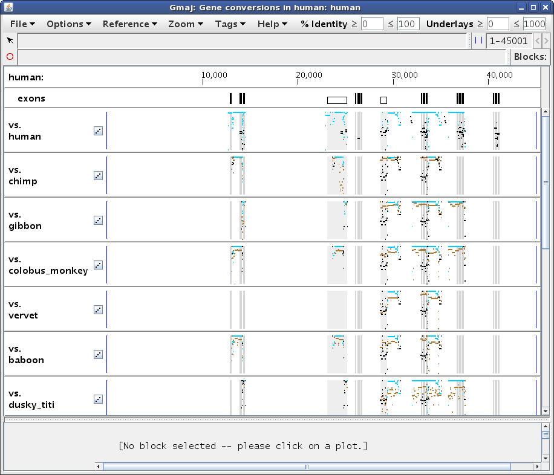
|
To examine the conversion evidence more closely, we can zoom in on a region by dragging the mouse in any pip to "sweep out" an area of interest. Let's select the region from about 28,000 to 31,500, to get a display similar to Figure 2a. Notice how the turquoise conversions are generally above the brown orthologous alignments (i.e. they have a higher percent identity), while the black non-converted regions of the self alignment are lower. Also, the conversion endpoints identified using different outgroups may vary, for example the ones from chimp and dusky_titi. Are these observations really all for the same conversion event? And why doesn't the squirrel_monkey plot (scroll down in Gmaj to see it) show any brown lines in this region?
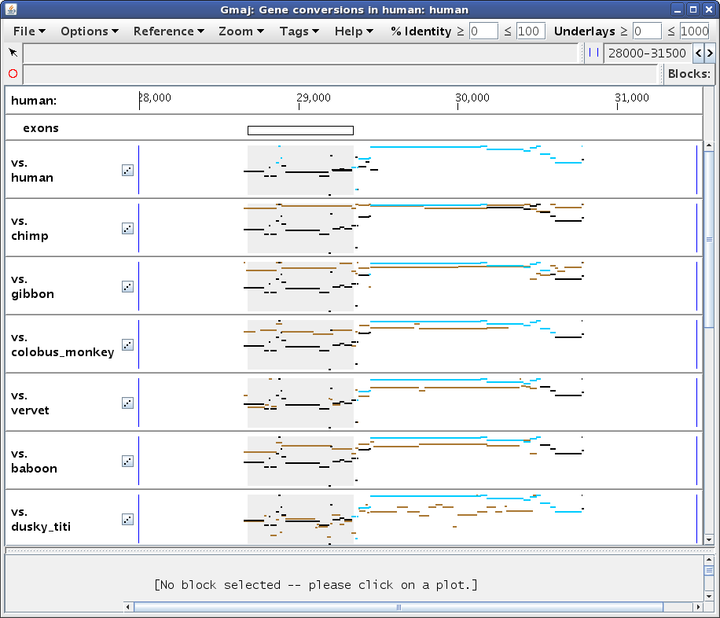
|
To answer these questions, we need more detailed information about the
conversion calls, which we can obtain by pressing the 'g' key (a
shortcut for selecting Options > Gene Conversion Info from the menu). This
produces another window containing a table of information about the identified
conversions covering a particular selected point. Since we haven't selected a
point yet, the table is empty (Figure 2b).
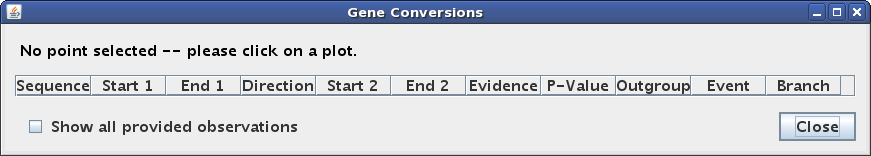
|
Let's click on the conversion at ~29,600 in the top pip (human self-alignment). This sets Gmaj's "mark", which specifies a particular point in a particular pairwise alignment and a particular MAF block. Setting the mark has several effects on our windows. In the main multi-pip window (Figure 3a), the color of the entire block changes from black/turquoise to red in the plots, and the point where we clicked (in this case in the self-alignment pip) is marked with a small red circle. In the other pips, the circle is gray to indicate that the mark is really in the self alignment rather than in the outgroup plot. In addition, the bottom panel is filled in with the text alignment for the selected MAF block, and the marked position corresponding to the red circle is highlighted. Lastly, the second status line below the menu bar (labeled with a red circle) now provides information about the marked position. The first status line (labeled with an arrow) gives information about whatever the mouse is pointing at; in this case pointing at the turquoise conversion highlight in the text panel indicates that there are several different events observed in this region via various outgroup species -- too many to fit in the panel.
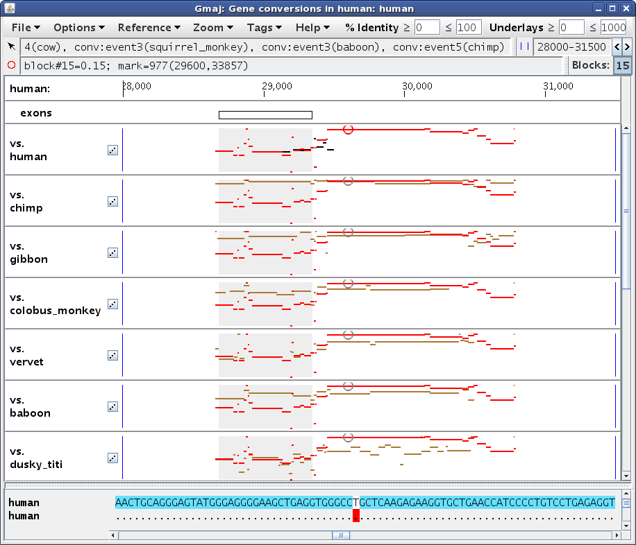
|
In the other window (Figure 3b), we see that the table has now been filled in with details about the conversion observations at our marked position. The Direction column indicates whether paralog #1 overwrote paralog #2 or vice-versa, if this can be determined. The Event and Branch columns reveal that most of the observations, including the one from dusky_titi, are attributed to the same event in edge 1 or 3 of the phylogenetic tree supplied as input (human or human-chimp ancestor), but the observation from chimp is inferred to be a different, human-specific event, while the one from cow appears to have occurred somewhere between edges 3 and 25 (human-chimp and human-tree_shrew ancestors). The Evidence column shows that most of these calls were made based on a quadruplet test (both human paralogs had orthologs in the outgroup sequence), but squirrel_monkey had only a triplet, with only paralog #2 (at ~34k) having an ortholog. This explains why there are no brown lines in the squirrel_monkey plot in our zoomed region, yet a conversion can still be detected based on the other paralog's ortholog. Indeed, adjusting the zoom to the other paralog does show brown lines for squirrel_monkey in that region, with a strong contrast between the converted and non-converted areas (not shown; exercise left for the reader; hint: use the Zoom menu).
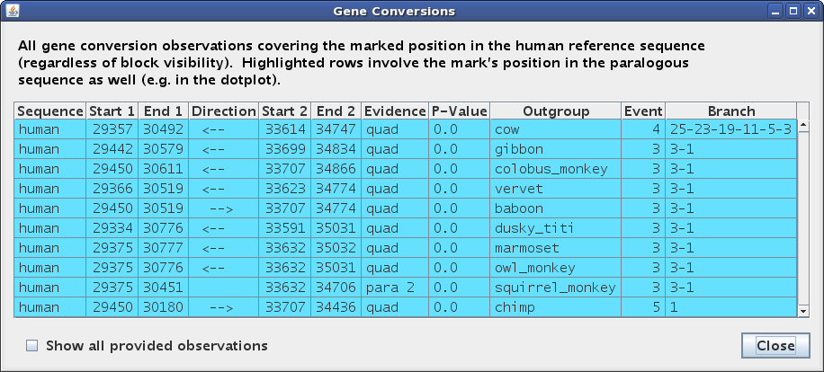
|
In Figure 3b all of the lines are highlighted in turquoise, indicating that they involve the same other paralog in the human sequence, or more precisely, that they cover the mark's y-axis position in the human-human dotplot in addition to its x-axis position. To examine the dotplot, click on the little button with diagonal dots in the label of the self-alignment pip, and then select Zoom > Unzoom from the menu bar of the new window that opens (Figure 3c). Indeed, there are no other conversions having the same x-axis position but a different y-axis position from the red circle. However, if you move the mark to a position where several conversion regions are lined up vertically, such as between exons 2 and 3 of the HBZ gene, then the table will only highlight the observations at the mark's vertical position and leave the others with a gray background (not shown).
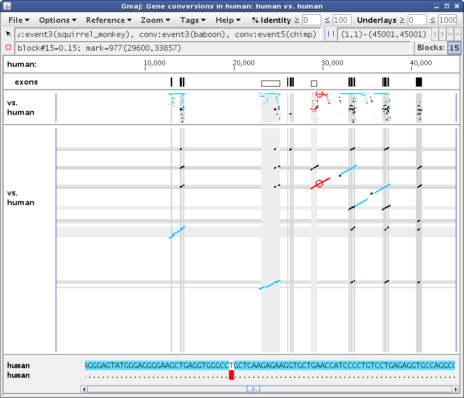
|
If you click in an evidence pip (i.e. not the first, self-alignment one), then
the mark will be set to a position in the brown outgroup alignment, and the
text panel highlights and table rows will be restricted to conversion
observations obtained via that outgroup (Figures 4a, 4b). (Although if you
really want to click on the self-alignment from an evidence pip, you can do it
by holding down the Alt key.)
|
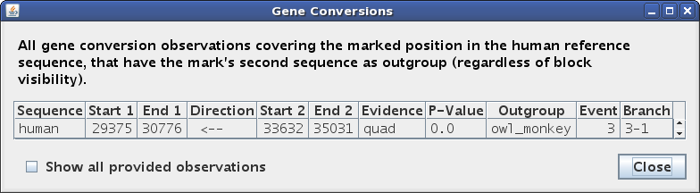
|
The dotplot for an outgroup alignment is a little different (Figure 4c). It does not superimpose the self-alignment, because unlike with the pips, the y-axis coordinates are generally different for the two alignments. Thus, the dotplot does not actually show the conversion regions at all; instead it illustrates how the full, chained outgroup alignment has been clipped to the deduced orthologs of the paralogous human blocks. However, the pip located above the dotplot is the same as the one from the main window, and still shows the conversion regions observed using that outgroup.
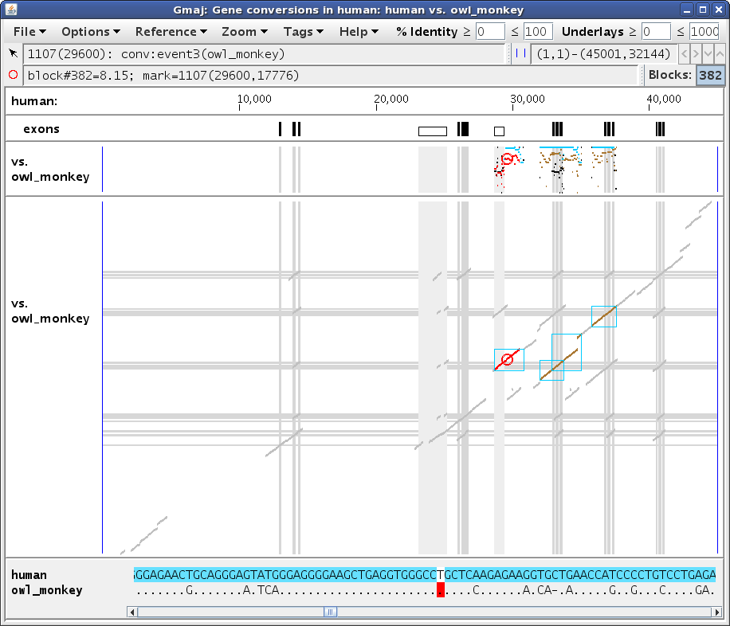
|
Not all conversions can be readily detected by triplet or quadruplet tests. Because these tests work by observing differences in the intra- and inter-species similarity levels in the putative converted region vs. its surroundings, a converted region without adequate surroundings will be missed. In particular, a conversion that covers most or all of an ancient duplication will just look like a recent duplication, unless we notice that essentially the same duplication is suspiciously present in many other long-diverged species. Accordingly, CHAP includes an additional test for this type of situation, which can be seen in a conversion between the HBA1 and HBA2 genes.
Let's move our zoom to the region from 31,000 to 39,000, this time by selecting Zoom > Set Zoom from the multi-pip window's menu and typing those endpoints into the boxes. Then click somewhere in an outgroup plot (say cow) so all of the self-alignment segments will be black and turquoise instead of red, and scroll back up to the top. You should get a display similar to Figure 5a, where the HBA2 gene is on the left and the HBA1 gene is on the right (which you can verify by pointing at the annotations below the ruler; here the mouse is pointing at the leftmost black box in the exons panel).
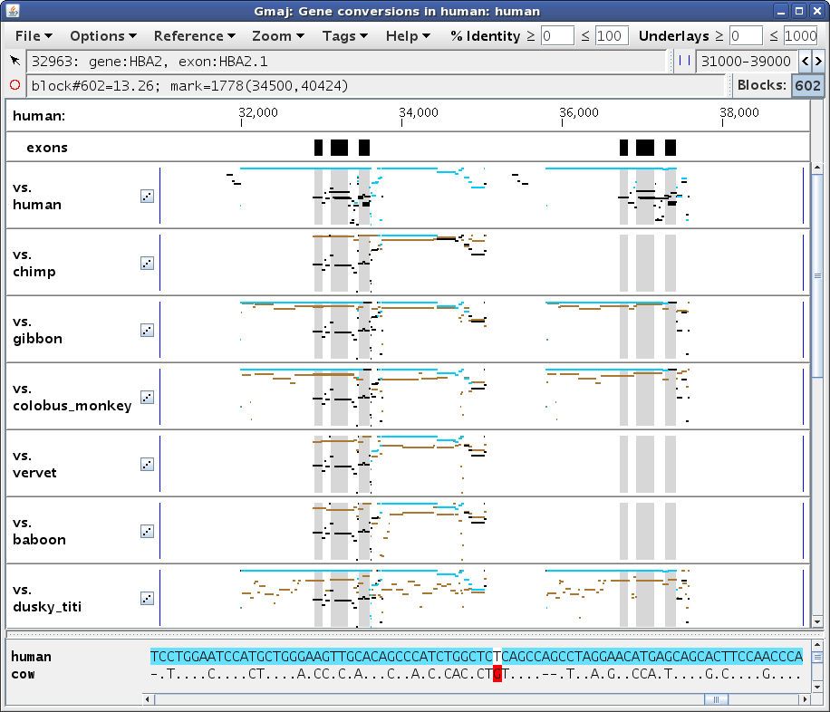
|
Next, set the mark to position ~33,000 in the self alignment, by first clicking in the pip and then clicking in the text panel to adjust it, to get something like Figure 5b. Pointing at that position in the bottom text row reveals that the aligning paralog contains the first exon of the HBA1 gene. (The yellow and purple highlights in the lower text row indicate the locations of genes and exons, respectively; similar highlights are present in the upper row for HBA2 as well, but they are obscured by the turquoise conversion highlights.) Setting the mark turns the selected MAF block red to show its extent; here the turquoise segments to the immediate right of the red ones (around 34,000) belong to a different conversion, which is more readily apparent in the dotplot (Figure 5c).
In this case the conversion covers the paralogous blocks almost completely, as can be seen by comparing Figure 5b vs. 5a, and also by scrolling to the ends of the text panel. The remaining black lines in this region are from alignments of HBA2 with other genes in the cluster; these are apparent in the dotplot (Figure 5c) and can be verified by clicking on those black segments in the pip to see where they fall in the dotplot (not shown). So although the paralogous regions do have a higher similarity to each other than to their respective orthologs, without sufficient unconverted flanking regions in the same paralogous blocks it is difficult to be confident that a conversion has occurred, using only the criteria described by Hsu et al. (2010). Therefore CHAP applies the additional criterion of Song et al. (2011), which relies on finding evidence that the duplication occurred before the speciation event that separated the reference and outgroup species.
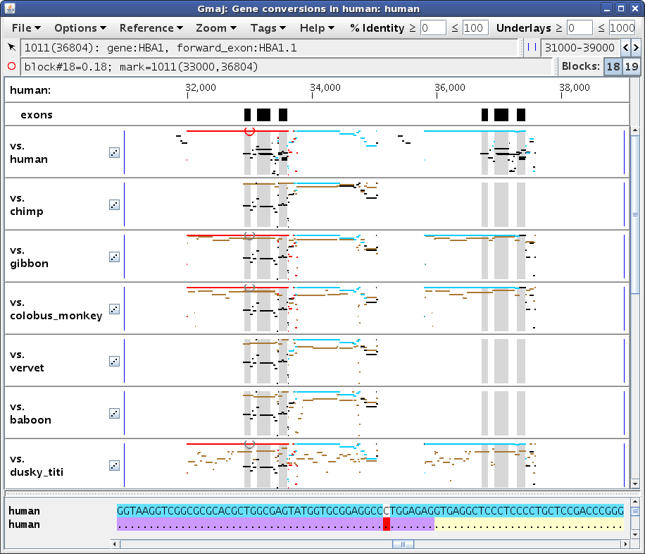
|
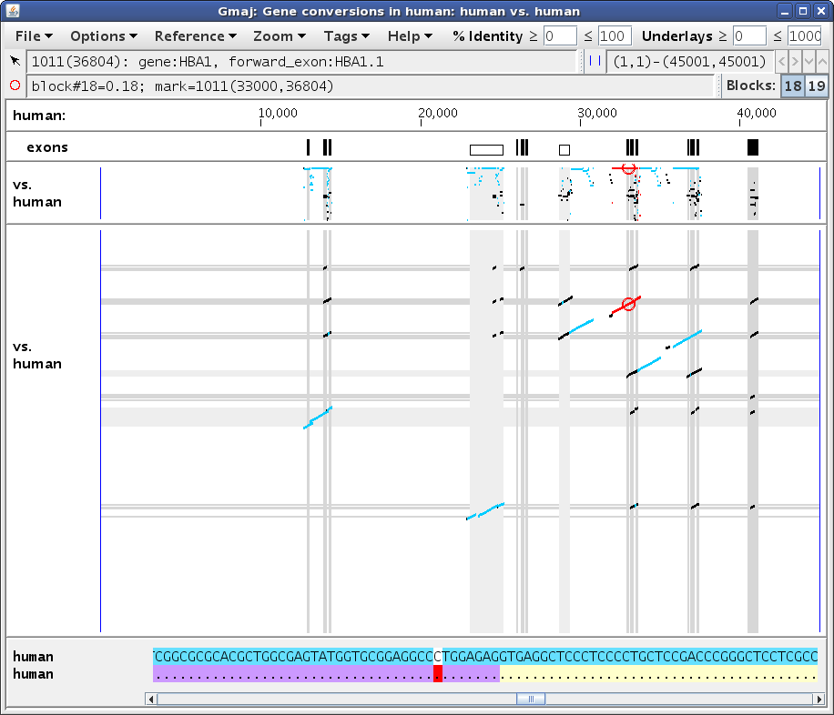
|
Pressing 'g' to open or raise the table window (Figure 5d) shows
that all of the observations at this position are for the same event in the
human-chimp ancestor, though they disagree about the direction of conversion.
The Evidence type for this detection criterion is listed as "old dup".
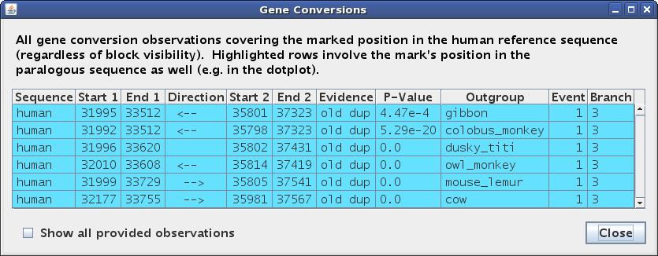
|
The "old dup" criterion depends heavily on the ortholog calls, so it is often helpful to see exactly how those calls were made for a given pair of sequences. To do that, run the other script as follows:
cd aglobin.example
../gmaj-ortho.sh human owl_monkey cage
This should produce a window similar to Figure 6, showing two different alignments simultaneously on the same pip and dotplot: the full chained pairwise alignment of the specified sequences (brown), with the subset identified as many-to-many orthologs drawn on top (black). In brief, we conclude that paralogous intervals were created by a duplication that preceded the reference-outgroup speciation if they have different orthologs in the outgroup.
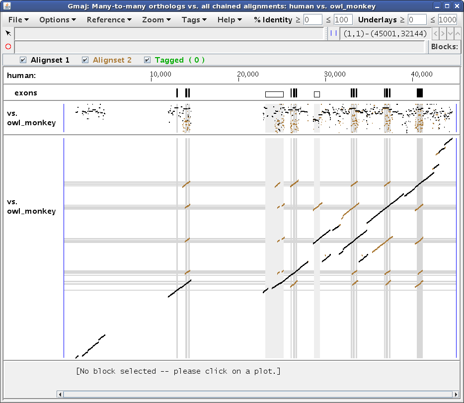
|
Hsu C-H, Zhang Y, Hardison RC, NISC Comparative Sequencing Program, Green ED, Miller W (2010) An effective method for detecting gene conversion events in whole genomes. J Comput Biol 17:1281-97. PubMed 20874409
Song G, Hsu C-H, Riemer C, Zhang Y, Kim HL, Hoffmann F, Zhang L, Hardison RC, NISC Comparative Sequencing Program, Green ED, Miller W (2011) Conversion events in gene clusters. BMC Evol. Biol. 11:226. PubMed 21798034
November 2011